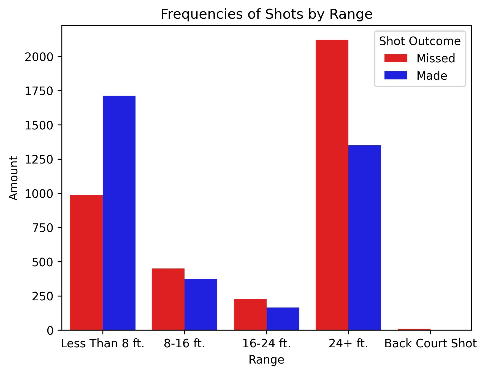

Analyzing Celtics Shot Statistics
Shot Frequency by Distance
This bar graph represents the amount of missed and made shots by the Celtics as dependent on the distance from the basket. After first understanding the team’s overall shooting percentage, we next wanted to analyze what types of shots the Celtics are taking and how effective those specific types of shots are. This visualization highlights the Celtics' emphasis on three-point shooting, with a high concentration of attempts from beyond the arc, reflecting their modern offensive strategy.
Shot Distance Variation by Quarter

This boxplot examines the variation in shot distances across different quarters, separated by whether the shot was made or missed. The red boxplots represent missed shots, while the blue boxplots represent made shots. This visualization helps us understand how shot success is correlated with distance and game progression.
Analyzing Player Performance
Player Shot Frequency and Success

This bar graph compares the number of missed and made shots by players on the Celtics' roster. By allowing us to compare the efficacy of players in their shot-taking, this bar graph helps us make strategic recommendations toward the team’s offensive strategy.
Shot Type by Outcome
This heatmap explores the relationship between shot type and shot outcome. The visualization provides insights into the Celtics’ reliance on long-range shooting and their scoring efficiency across different shot types.
Interactive Visualizations
Shot Chart of 10 Players
This interactive visualization provides an interface where the user can select different players on the Celtics roster and analyze where on the court that player had missed and made shots during each quarter. It helps visually understand player performance and strategy on the court.
Scoring Efficiency Analysis
This line graph compares the total number of points scored from 2-point shots and 3-point shots by the Celtics over various games. It provides interactive features to analyze the scoring breakdown over a selected time range, helping us monitor the Celtics' shot selection strategy.
Celtics Shot Distribution
This interactive bar chart shows the distribution of shots taken by Celtics players across different zones on the court. It allows users to explore player-specific shot patterns and performance trends.